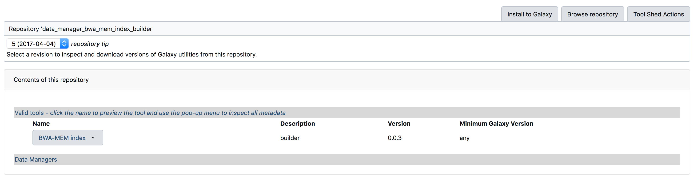
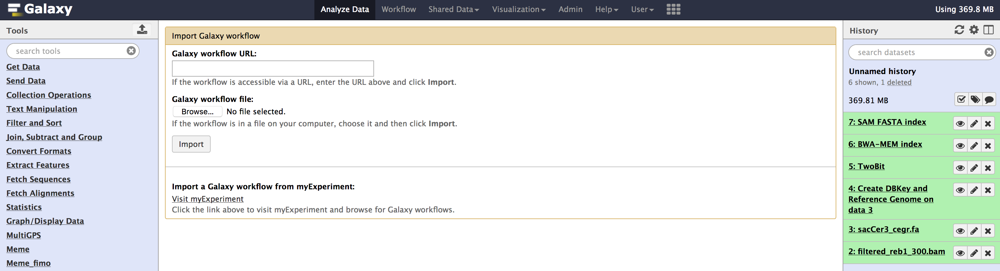

Dependencies#
- Assuming you have installed the required development tools for Mac OS
- Install samtools.
brew install samtools
- Install yarn.
brew install yarn
Installing Galaxy#
It is recommended that you clone galaxy to your ~/Desktop, so that GALAXY's internal paths are shorter and avoid conda throwing any errors that your path exceeds the maximum characters for tool install paths
here we are going to work with 17.09 release of GALAXY.
- Open a
terminaland clone GALAXY to your~/Desktop.
cd ~/Desktop
git clone -b release_17.09 https://github.com/galaxyproject/galaxy.git
- Start GALAXY
cd galaxy
sh run.sh
Note that when you are starting galaxy for the first time, it takes some time to install required internal dependencies and setup its internal database. Once its gone through it, you should be able to see the start up page.
- Congratulations you have successfully installed GALAXY on your local machine.
| Useful resources & tutorials |
|---|
| Get galaxy |
| Learn galaxy |
| Dagobah training |
Configuring Galaxy#
Setting up an Admin
galaxy.ini file contains most of the configurations to your local galaxy. It has some predefined defaults which you might want to re-think before changing anything.
We will be using cegr@psu.edu as the default admin, so that it can be used to integrate with PEGR in the PEGR tutorial, where we use our local galaxy to send out information to PEGR
- Make sure your Galaxy is not online, before making any changes to configuration.
- Open your galaxy folder in
Finderon your mac. you should see aconfig/folder. - Inside the
config/, you will find agalaxy.ini.samplefile. - Copy the
galaxy.ini.samplewithin the same folder and rename the copied file togalaxy.ini - Open the
galaxy.iniin a text editor of your choice. - Search for the line that starts with
admin_usersand addcegr@psu.edu

Above image shows the change. make sure you have edited ~/Desktop/galaxy/config/galaxy.ini
- Start your Galaxy now,
sh run.sh - Click on
Usermenu and then clickregister - You should see a registration page as below

- Enter
cegr@psu.eduas the email address and choose apassword,public nameof your choice. - Once you login, you should now have the
Adminmenu show up on the menu bar on the top.

- When you click on the
Admintab, you should see the below page.

Adding Custom Genomes#
sacCer3_cegr is the customized yeast genome we are using within the lab. Though the differences are few (to the best of my knowledge), but are very important to keep in mind while performing general data analysis. This genome deviates from the UCSC recommendations
sacCer3_cegr contains 2-micron regions & chromosome naming is using decimal number instead of roman numerals. This causes some disadvantages to use tools like bedGraphToBigWig, etc.
- Click on
Admintab, then underTools and Tool Shedsection, click onSearch Tool Shed

- Click on
Galaxy Main Tool Shed

- Search & Install below tools. you can copy and paste below tool names into the search box.
| Tool Name |
|---|
data_manager_bwa_mem_index_builder |
data_manager_fetch_genome_dbkeys_all_fasta |
data_manager_sam_fasta_index_builder |
data_manager_twobit_builder |
- Below images previews the steps for installing a tool.



- Once you have installed all the above tools, You can verify the installation at
Admin > Tools and Tool shed > Manage installed tools

- Download the
sacCer3_cegrgenome from here - Upload the file you downloaded above into galaxy, using the
upload buttonlocated on the tools menu, as shown in the image below.

- Once you have uploaded, you should see the file appear in the “history pane” on your right.
- Go to
Admintab, underDatasection, Click onLocal datato getData manager
- We need to run below tools one after the other in the exact order mentioned below:
| Tool | Order |
|---|---|
| Create DBkey and reference geneome | #1 |
| TwoBit | #2 |
| BWA-MEM | #3 |
| SAM Fasta | #4 |
All these tools are available from the Admin > Data > Local data section. Below are images for step-by-step execution of above tools in the same order. use them to fill out any default information that is required and follow along
- You can specify sequence name to be
sacCer3_cegrand leave everything as default in all the tools.


- Once you have run all the tools, you need to check couple of things that populate in the internal database of galaxy. You can check that information from your
Adminpage. - Go to
Admin > Data > Local datasection, underView Tool Data Table Entries. Click on__dbkeys__you should see something like below.

- Similarly check
all_fasta,twobit,bwa_mem_indexes. All of them should contain an entry forsacCer3_cegr. Path could be different in your case.


- If your able to see similar results as above images.
Congratulations!you have successfully added a custom genome build into your galaxy.
Importing ChIP-exo Workflow#
We will install the core-sequencing workflow that the lab uses to analyze all the samples that are sequenced. This pipeline is run to create BAM files, peak calling using genetrack and MEME motif analysis.
- Download the workflow file here.
- Once you have downloaded the workflow. You can
importit into your local galaxy from theWorkflowtab using theupload or import workflowbutton located beside the search bar. (see image below).


- Once you have selected the workflow file and clicked
import. You might see some errors such as below. Nothing to worry, the error messages is caused by tools that are not yet installed & are important for the workflow to run in your galaxy.

- Click on
editoption under the workflow drop-down menu. To find out the missing tools. - You need to install each tool manually from toolshed. Go to
Admin > Tools and Tool Shed > Search toolShedto search and install each tool that is missing.
Few tools have their toolnames in the workflow that end with output_statistics. These are the tools that are not available on Galaxy toolshed and need to be side-loaded separately, which we will do in the next section. so for now, you can ignore installing these tools and their errors.
Integrating CEGR output_statistics#
This section is similar to adding custom tools into Galaxy, here is a (tutorial). cegr-galaxy repo contains other important scripts that are used to run the core-sequencing pipeline on production galaxy. The repo has a README file detailing the usage of each script.
-
Clone the repository containing the CEGR tools from seqcode/cegr-galaxy
git clone https://github.com/seqcode/cegr-galaxy.git
-
Copy the entire
cegr_statisticsfolder to this locationgalaxy/tools/within your local galaxy. - Open
galaxy/config/tool_conf.xmlin a text editor of your choice.
If the above file doesn't exist, there should be a file in the same config directory called tool_conf.xml.main, copy and rename the file to tool_conf.xml
- Add below lines at the end of file, within the
</toolbox>tag.
<section id="cegr_tools" name="CEGR">
<tool file="cegr_statistics/bam_to_scidx_output_stats.xml" />
<tool file="cegr_statistics/bedtools_intersectbed_output_stats.xml" />
<tool file="cegr_statistics/bwa_mem_output_stats_single.xml" />
<tool file="cegr_statistics/cwpair2_output_stats.xml" />
<tool file="cegr_statistics/extract_genomic_dna_output_stats.xml" />
<tool file="cegr_statistics/extract_genomic_dna_output_stats2.xml" />
<tool file="cegr_statistics/extract_genomic_dna_output_stats3.xml" />
<tool file="cegr_statistics/fasta_nucleotide_color_plot_output_stats.xml" />
<tool file="cegr_statistics/fastqc_output_stats.xml" />
<tool file="cegr_statistics/fastqc_output_stats2.xml" />
<tool file="cegr_statistics/genetrack_output_stats.xml" />
<tool file="cegr_statistics/input_dataset_r1_output_stats.xml" />
<tool file="cegr_statistics/input_dataset_r2_output_stats.xml" />
<tool file="cegr_statistics/mark_duplicates_bam_output_stats.xml" />
<tool file="cegr_statistics/meme_fimo_output_stats.xml" />
<tool file="cegr_statistics/meme_meme_output_stats.xml" />
<tool file="cegr_statistics/pe_histogram_output_stats.xml" />
<tool file="cegr_statistics/repeatmasker_wrapper_output_stats.xml" />
<tool file="cegr_statistics/repeatmasker_wrapper_output_stats2.xml" />
<tool file="cegr_statistics/samtool_filter2_output_stats.xml" />
<tool file="cegr_statistics/tag_pileup_frequency_output_stats.xml" />
</section>
The above lines informs GALAXY, where it can find the tools and corresponding toolwrappers
- The file
galaxy/config/tool_config.xmlshould look something like below:

- Save the file and restart Galaxy. You should now see these tools appear under
Toolsmenu within galaxy'sAnalyze Datatab similar to below.

Congratulations!you have successfully installedoutput_statisticstools into your galaxy.